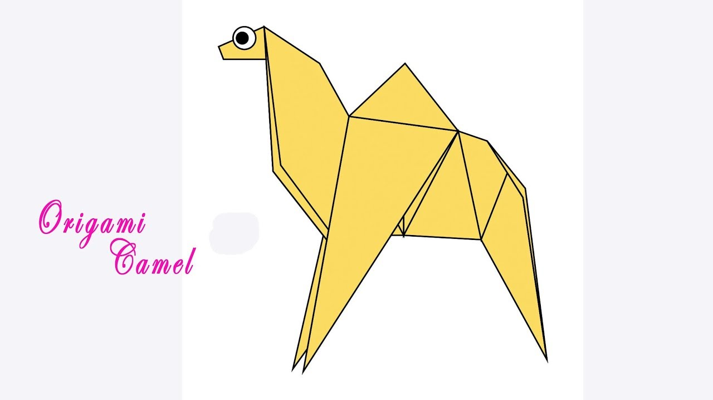

Orangami Designs
about us
follow us

Interesting Facts about Chameleons
- Chameleons are reptiles that are part of the iguana suborder.
- Changing skin colours is an important part of communication among Chameleons.
- Most Chameleons have a prehensile tail that they use to wrap around tree branches.

Interesting Facts about Pigeon
- Pigeons are incredibly comple and intelligent animals.
- Pigeons are reowned for their outstanding navigational abilities.
- Pigeons have excellent hearing abilities.

Interesting Facts about Camels
- Camels have three set of eyelids and two rows of eyelashes to keep sand out of their eyes.
- Camels have thick lips which let them forage for thory plants that other animals can't eat.
- Camels can completely shut their nostrills during sandstroms.

Interesting Facts about Teddy Bears
- The term bear-hug was first recorded in 1846.
- The teddy bears' picnic song was originally called The Teddy Bear two steps.
- The Oxford English Dictionary dates the first use of the term teddy bear to 1906.

Interesting Facts about Panda
- A gaint Panda is much bigger than your teddy bear.
- Gaint Pandas are good at climbing trees and can also swim.
- Pandas go for pink from white and black.

Interesting Facts about Flying Cicade.
- Most have red-orange eyes.But ocassionally cicades have blue,white or graying eyes.
- They improve lawns by digging tunnels that allow air into soil, When they die, thier rotting bodies put nitrogen in the soil.
- There short adult lifes is not unsual for bugs.The adult stage for many insects is only for finding a mate or moving to a new location.